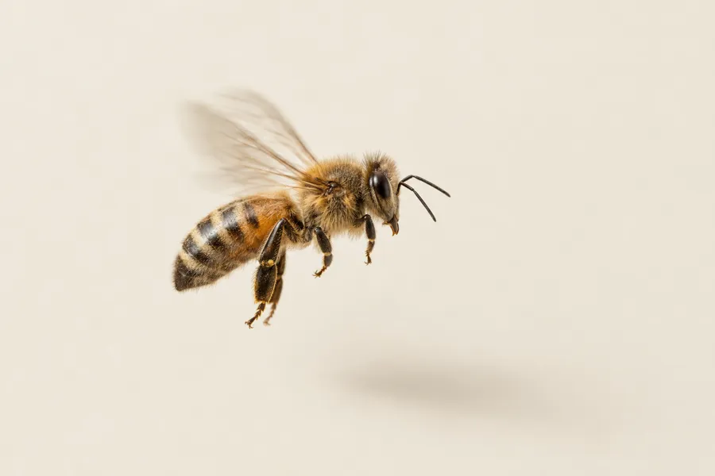
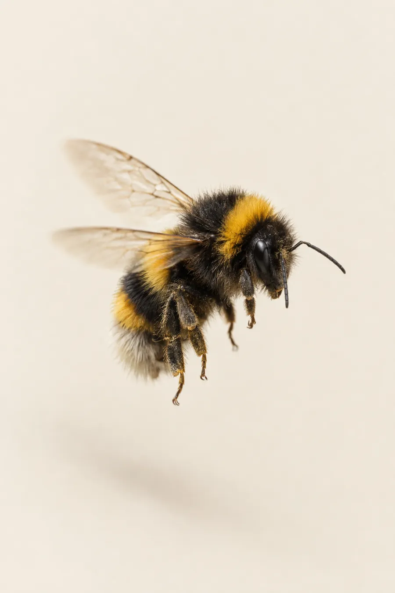
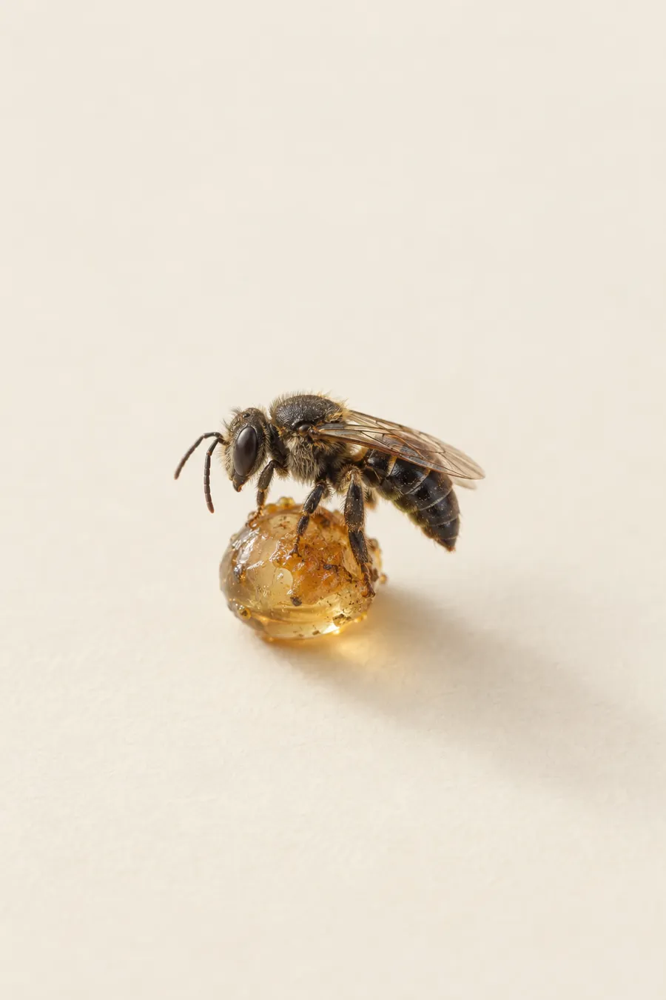
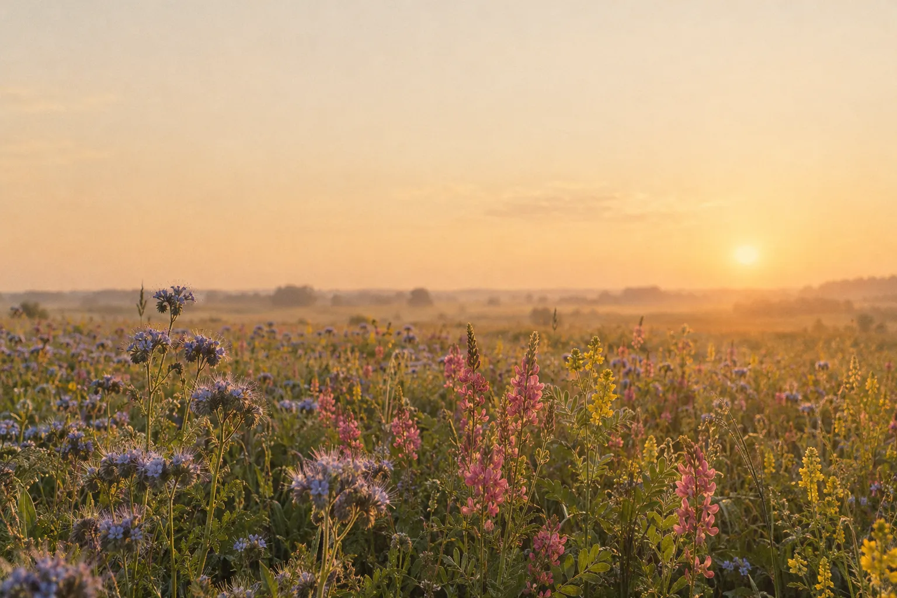

0кг/га
Мордовник шароголовый
До 1200 кг мёда с гектара сплошных зарослей. «Король медоносов» конкурирует по нектару только с липой.

Травы, которые кормят пчёл, и пчёлы, которые дают жизнь будущим семенам. Селекционная программа медоносных культур и опылителей.
ЛистатьОсновная культура О.А.З.И.С — подсолнечник — требует перекрёстного опыления насекомыми. Поэтому мы растим не только семена, но и кормовую базу для пчёл: медоносы, которые цветут долго, выделяют нектар в засуху и улучшают почву.
Нажмите на карточку,
чтобы открыть программу
До 1200 кг мёда с гектара сплошных зарослей. «Король медоносов» конкурирует по нектару только с липой.
До 1 тонны мёда с гектара. Цветёт с конца июня по середину августа, даёт прозрачный «снежный» мёд.
Мордовник цветёт 30–35 дней в разгар лета и выделяет нектар весь световой день — пчёлы работают до сумерек.
Мощная корневая система разрыхляет почву на глубину до 1,5 метра и обогащает её азотом и фосфором.
Выберите признак — и увидите, в каких программах он ведётся.
В зависимости от площади посева и задач селекционной работы мы используем разные варианты опыления — выбираем опылителя под задачу.
Управляемое опыление на полевых участках гибридизации.
Пчёлы — основной опылитель на наших полях. Ежегодно используется более 10 тыс. пчелосемей, а при росте производства их количество будет увеличиваться.
С 2025 года реализуется проект собственной пчелиной фермы — не менее 5 тыс. пчелосемей. Для этого выделен участок луга 20 га, строится полностью автоматическая линия по производству мёда и современные омшаники.
Опыление в замкнутых условиях и при сложной погоде.
На участках с групповыми изоляторами площадью от 10 до 500 м² мы используем шмелей. В отличие от пчёл, они работают в замкнутых помещениях, при температуре от +10 °C, в пасмурную погоду и при сильном ветре.
Минус — более высокая стоимость опыления и риск укусов персонала. В планах — собственное производство шмелиных семей в высокотехнологичных ульях-боксах.

Безжалые тропические пчёлы для групповых изоляторов.
Чтобы снизить риск укусов персонала во время цветения, мы проводим эксперимент по опылению безжалыми тропическими пчёлами. В 2027 году первые партии прибудут на нашу станцию — будем рады поделиться опытом.
Если опыт будет признан успешным, эти насекомые могут взять на себя до 50 % опыления групповых изоляторов.


«Мордовник выделяет нектар даже в сильную засуху и жару выше +30 °C, когда другие медоносы полностью выгорают».